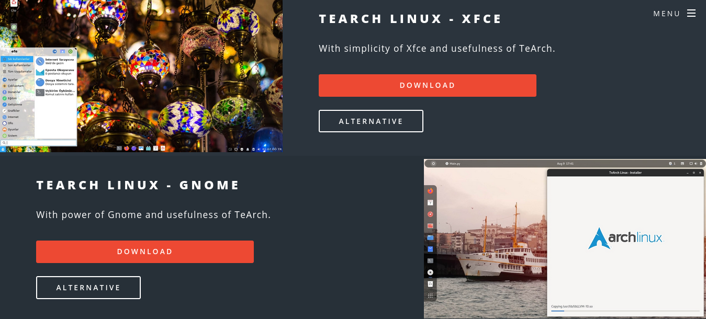

TeArch Linux Kurulumu¶
TeArch Linux’u kurmak oldukça kolay ve zahmetsizdir. Aşağıdaki adımları takip ederek TeArch Linux’u çok kısa bir sürede kolayca kurabilirsiniz.
En Güncel Kurulum Medyasını İndirin¶
- TeArch Linux’a ait en yeni kurulum medyasını indirme sayfamızdan indirebilirsiniz.
- 
Kurulum Medyasını USB Belleğe veya DVD’ye Yazdırın¶
Windows’ta Canlı USB veya DVD Oluşturmak Windows’ta usb veya dvd medyası oluşturmak için Etcher veya Rufus programlarını tercih edebilirsiniz.

Bilgisayarı USB veya DVD’den başlatın¶
Kuruluma başlamak için bilgisayarınızı yeniden başlatın ve boot menüsüne girin. Boot menüsü anakarttan anakarta farklılık gösterse de genel olarak F12, Del, Esc ve F2 tuşlarıdır. Daha fazla bilgi için bu linke bakabilirsiniz.
Her şeye rağmen yine de USB veya DVD’den başlatamıyorsanız şu yolları deneyebilirsiniz:
- Bios’tan “Secure Boot”u devre dışı bırakmak. - Boot menüsü yerine boot sırasını BIOS’tan değiştirmek. BIOS tuşunuzu öğrenmek için de bu linke bakabilirsiniz.
Kuruluma Başlayın¶
Bilgisayarımızı önyüklediğimiz aygıttan başlattık ve artık her şey hazır. İsterseniz TeArch Linux’u deneyebilirsiniz veya bilgisayarınıza kurabilirsiniz. Kurmak istiyorsanız ağaşıdaki adımları takip etmenizi öneriyoruz…
Kurulum Aracı Kullanımı¶
TeArch Linux başlatıldıktan sonra kurulum aracı otomatik olarak açılmakta. Fakat kurulum aracını kapattıysanız veya kurulum aracı otomatik olarak açılmadıysa, kurulum aracını uygulamalar menüsünden açınız.
Genel Ayarları Yapmak¶
Kurulum aracı açıldıktan sonra sırayla; dil, zaman dilimi, klavye ve kullanıcı hesabı ayarlarını yapmanız istenecektir. Bu ayarları nasıl istiyorsanız öyle yapabilirsiniz. Ayrıca kullanıcı hesabı kısmında yaptığınız ayarlamaları bir yere not etmenizi öneriyoruz.

Disk Bölümlemesi¶
Kurulumun en önemli kısmı disk bölümlemesidir. Burada yapacağınız en ufak bir hata verilerinizin silinmesine veya kurulumun düzgün gerçekleştirilememesine sebep olabilir. Bu sebepten ötürü bu aşamada dikkatlı olmanızı tavsiye ediyoruz.
Disk bölüm ekranına geldiğinizde karşınıza 2 seçenek çıkmaktadır. Bunlardan “Automated Installation”, diskinizdeki her şeyi silerek yeni bölümler oluşturmaktadır. Eğer başka bölümleriniz varsa “Manual Partitioning” seçeneğini seçerek devam edebiliriz.

Manual Disk Bölümlemek¶
Manual disk bölümlemeye geçmeden önce sistemimiz efi destekliyor mu onu öğrenmeliyiz. Konsola “efibootmgr” yazdığımızda çıktı, “EFI variables are not supported on this system” şeklinde oluyorsa sistemimiz efi desteklemiyor demektir. Kurulumu yaparken buna dikkat etmemiz gerekecek.
EFI Destekleyen Bilgisayarlarda Kurulum Yapmak:¶
“Manual Partitioning” kısmına geldikten sonra bizi bölümlerimiz ve altta 2 buton karşılayacak. Biz yeni bölüm(ler) oluşturmak için alttaki “Edit Partitions” butonuna tıklayacağız.
Eğer bilgisayarımızda FAT32 ile formatlandırılmış bir disk bölümü yoksa elle kendimiz “EFI Sistem Bölümü” (ESP) oluşturmak zorundayız. Bunun için GParted’ı açtıktan sonra üstteki + simgesine tıklamalıyız. Oluşturacağınız ESP bölümünün özellikleri ise şunlar olmalıdır:
- Minimum 512 MiB alan. - FAT32 dosya sisteminde oluşturmak. - ESP bayrağı vermek. (Bunu diski oluşturduktan sonra diske sağ tıklayarak “Manage flags” menüsüne girerek vereceğiz.
ESP bölümünü oluşturduktan sonra sıra dosyalarımızın olacağı ext4 dosya sistemine sahip disk bölümünü olşturmakta. Bu bölüme vereceğiniz alan size bağlı fakat minimum 15G alan vermenizi önermekteyiz.
Diskleri oluşturup üstteki tik işaretine tıkladıktan sonra GParted’a kapatıp kurulum aracımızdaki “Refresh” tuşuna basabiliriz. Bu sayede yeni oluşturduğumuz bölümler de kurulum aracına eklenecektir.
Burada ise yeni oluşturduğumuz 512MiB’lik boot alanını veya daha önce başka işletim sistemleri tarafından oluşturulan EFI alanına sağ tıklayıp “Assign to /boot/efi” tuşuna tıklamalıyız. Daha sonra da kendimiz oluşturduğumuz “ext4” formatındaki alana sağ tıklayıp “Assign to /” tuşuna tıklamalıyız. Artık her şeyimiz hazır, gönül rahatlığıyla Next diyebilirsiniz :)

EFI Desteklemeyen (Eski BIOS) Bilgisayarlarda Kurulum Yapmak:¶
“Manual Partitioning” kısmına geldikten sonra bizi bölümlerimiz ve altta 2 buton karşılayacak. Biz yeni bölüm(ler) oluşturmak için alttaki “Edit Partitions” butonuna tıklayacağız.
İlk yapacağımız şey ext4 dosya sistemine sahip disk bölümünü olşturmakta. Bu bölüme vereceğiniz alan size bağlı fakat minimum 15G alan vermenizi önermekteyiz.
Diski oluşturup üstteki tik işaretine tıkladıktan sonra GParted’a kapatıp kurulum aracımızdaki “Refresh” tuşuna basabiliriz. Bu sayede yeni oluşturduğumuz bölüm(ler) de kurulum aracına eklenecektir.
Buradaysa kendimiz oluşturduğumuz “ext4” formatındaki alana sağ tıklayıp “Assign to /” tuşuna tıklamalıyız. Artık her şeyimiz hazır, gönül rahatlığıyla Next diyebilirsiniz :)

Not
Swap bölümünü oluşturmak zorunlu değil, bu yüzden anlatmadık. Eğer sistem belleğiniz 2G’dan azsa aynı yöntemleri izleyip “linux-swap” dosyasistemine sahip bir swap alanı oluşturabilirsiniz. Daha sonra da bu bölümü aktifleştirmek için “Assign to swap” tuşuna basabilirsiniz.
Uyarı
Next dedikten sonra sisteminizin düzgün bir şekilde açılması için “Install the GRUB boot menu on: /dev/sdx” seçeneğindeki tiki kaldırmayınız lütfen.
Beklemek¶
Geriye kalan tek şey beklemek… TeArch Linux, sisteminize yaklaşık 15 dakika gibi kısa bir sürede kurulacaktır. Kurulum bittikten sonra bilgisayarınızı yeniden başlatın ve TeArch’ı kullanmaya hemen başlayın :)